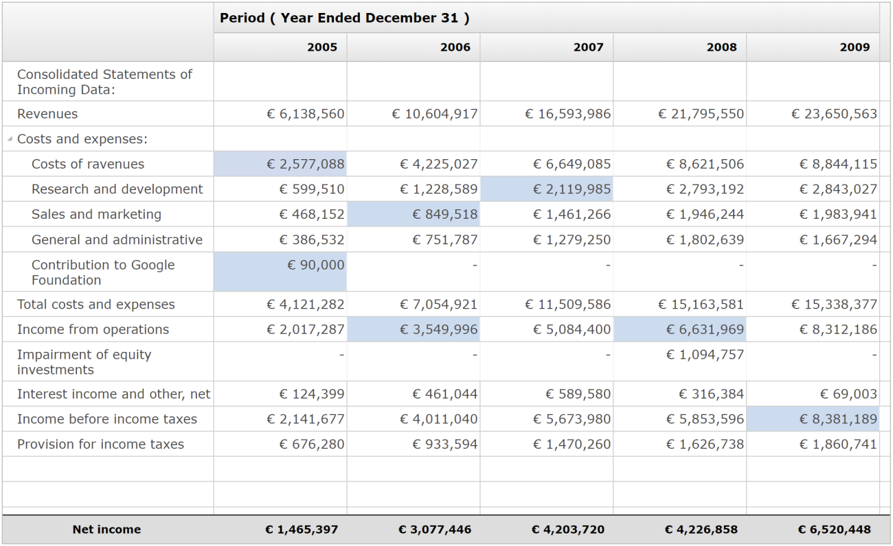
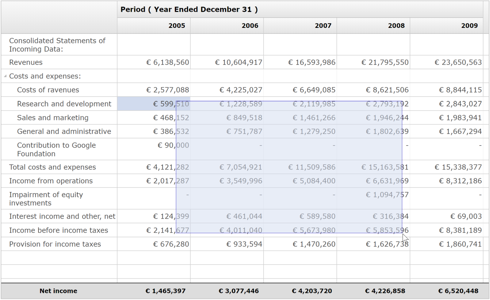

In this release we added the posibility to select one or more cells in Nebula Grid.


The selection can be made with keyboard, mouse or programmatically with the following API:
setCellSelectionEnabled(boolean)getCellSelectionEnabled()selectCell(Point)selectCells(Point[])selectAllCells()deselectCell(Point)deselectCells(Point[])deselectAllCells()getCellSelectionCount()setCellSelection(Point)setCellSelection(Point[])getCellSelection()setFocusColumn(GridColumn)getFocusColumn()getFocusCell()isCellSelected(Point)selectColumn(int)selectColumnGroup(int)selectColumnGroup(GridColumnGroup)getCell(Point)Fixed columns are the left most columns, excluded from horizontal scrolling. You can activate this feature in a similar way as in the Tree/Table widgets:
Grid grid = new Grid( parent, SWT.NONE );
gtid.setData( RWT.FIXED_COLUMNS, Integer.valueOf( 2 ) );
The following GridColumn method has been implemented: seTree(boolean)